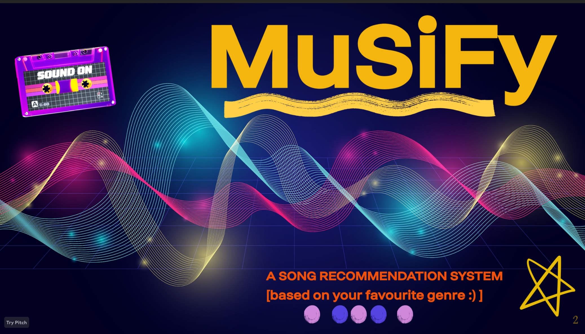
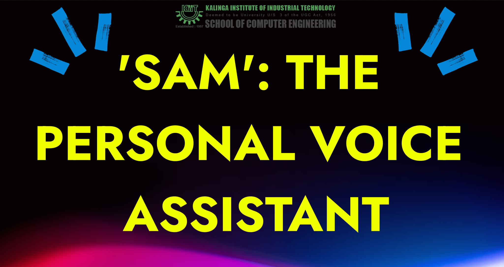

Resume
Summary
This is my portpolio as a Web developer.
Here I have mentioned all my projects, my achievements throughout my career and all the knowledge I have gained.
Education
Internships
-
Software Developer Intern : IzyCode
- Python fundamentals
- MySQL basics
- Python tasks related to effective learning
-
AWS Cloud Engineering Intern : LinuxWorld Informatics
- basics of EC2 and different functionalities of AWS, learned how to run virtual machines online .
- learnt the basics of storage and temporary memory.
- Devised automated deployment scripts for AWS services, enhancing system reliability and minimizing manual intervention.
Projects
1.Minor Project
- In the project, my contributions were these: GUI interface and Dataset cleansing
- Spotify integration into hyperlink, etc.

2.Major Project
- Engineered a personal voice assistant, SAM, with enhanced data processing for accurate voice recognition.
- Integrated gemini api for online support assistant
- For offline support , used DeepSeek R1

Certifications
Skills
Involvement
-
Photographer (KIIT) : KSAC ( Student Activity Center)
-
I was a photographer of the Student society called 'Kreative Eye'.
-
There, I was assigned a lot of events to go and take pictures with my fellow mates.